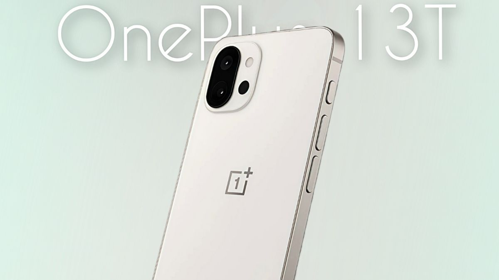
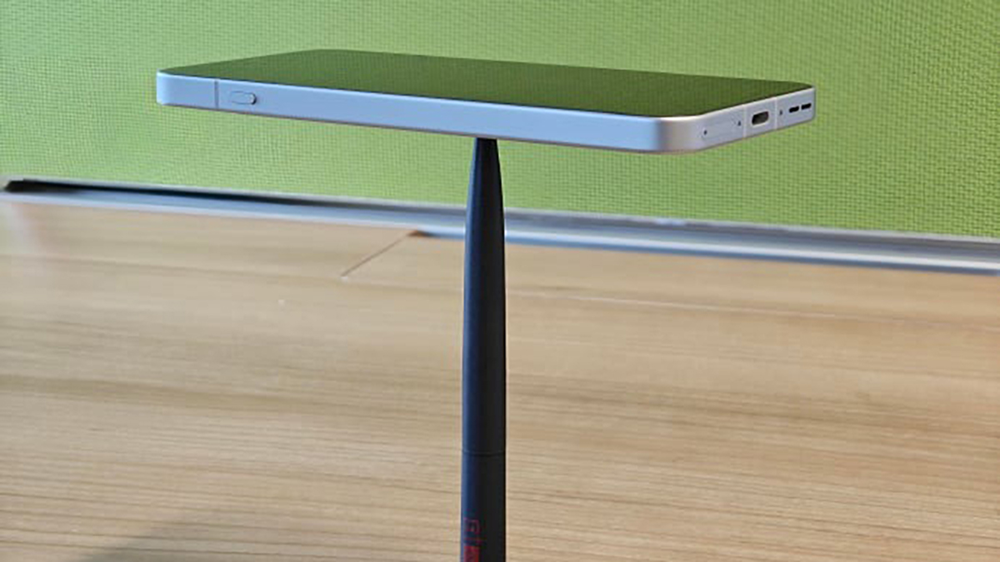
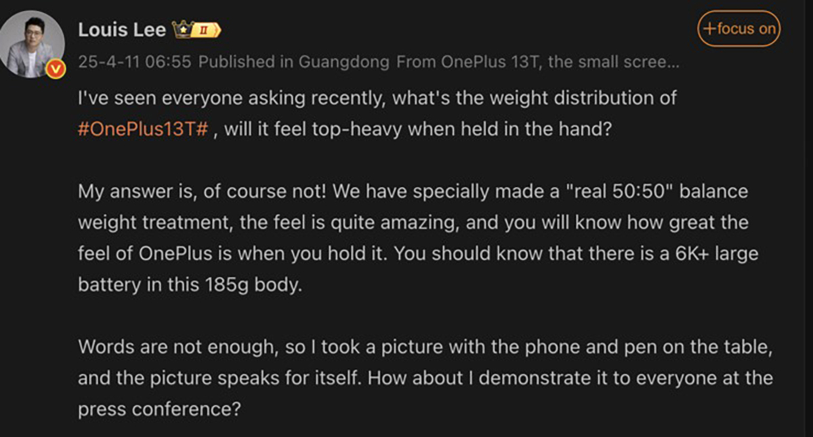
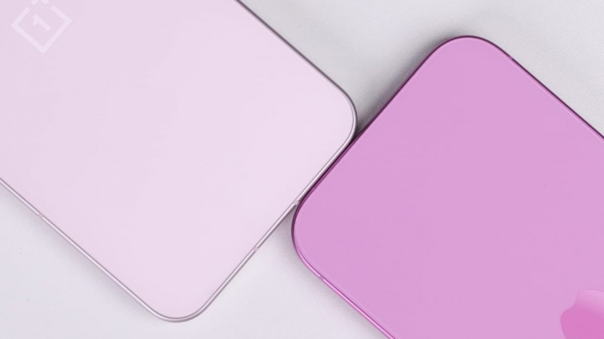

OnePlus 13T gây ấn tượng với tỷ lệ phân bổ trọng lượng hoàn hảo 50:50
Theo đó, chủ tịch OnePlus đã chia sẻ hình ảnh OnePlus 13T được cân bằng trên một cây bút, cho thấy phân bổ trọng lượng 50:50. Điều này thật ấn tượng, đặc biệt là khi xét đến việc điện thoại này được trang bị thỏi pin có dung lượng khủng 6,000 mAh, phần lớn được đặt ở nửa dưới của điện thoại. Dự kiến, OnePlus 13T nặng chỉ 185g, tức nhẹ hơn OnePlus 13 vốn nặng 210g. Khung máy nhẹ này kết hợp với phân bổ trọng lượng hợp lý, hứa hẹn mang đến trải nghiệm cầm nắm thoải mái cho người dùng.
Trong một bài đăng trên Weibo, Lee đã giới thiệu cách phân bổ trọng lượng 50:50 của OnePlus 13T bằng cách cân bằng nó trên một cây bút. "Chúng tôi đã tạo ra một cách xử lý trọng lượng cân bằng thực sự 50:50", ông viết. "Cảm giác thật tuyệt vời... Bạn nên biết rằng có một cục pin lớn 6K+ trong thân máy 185g này".
OnePlus 13T lộ ảnh với tùy chọn màu “hường” nữ tính (cập nhật ngày 10/4/2025)
Theo đó, hình ảnh rò rỉ mới nhất cho thấy OnePlus 13T sẽ có màu "hồng" cùng với các tùy chọn màu khác. Tuy nhiên, đây là tông màu cực kỳ nhạt, giống như màu giữa vàng và vàng hồng, nhưng không sáng bóng, như bạn có thể thấy trong hình ảnh bên trên khi đặt cạnh một chiếc iPhone.
Về cấu hình, các rò rỉ trước đó tiết lộ OnePlus 13T sẽ được trang bị màn hình OLED cao cấp, có kích thước 6.31 inch, hỗ trợ độ phân giải Full-HD+ sắc nét và tần số quét thích ứng 1-120Hz mượt mà. Bên trong, điện thoại thông minh này sẽ được cung cấp sức mạnh đến từ con chip Snapdragon 8 Elite và là điện thoại OnePlus đầu tiên loại bỏ Alert Slider để thay bằng nút thông minh mới.
Chưa hết, OnePlus 13T dự kiến sẽ có ít nhất hai camera ở mặt sau, bao gồm cảm biến chính 50MP và máy ảnh tele 50MP hỗ trợ zoom quang học 2x.
Nguồn: GSMArena
Ngày: 12/04/2025